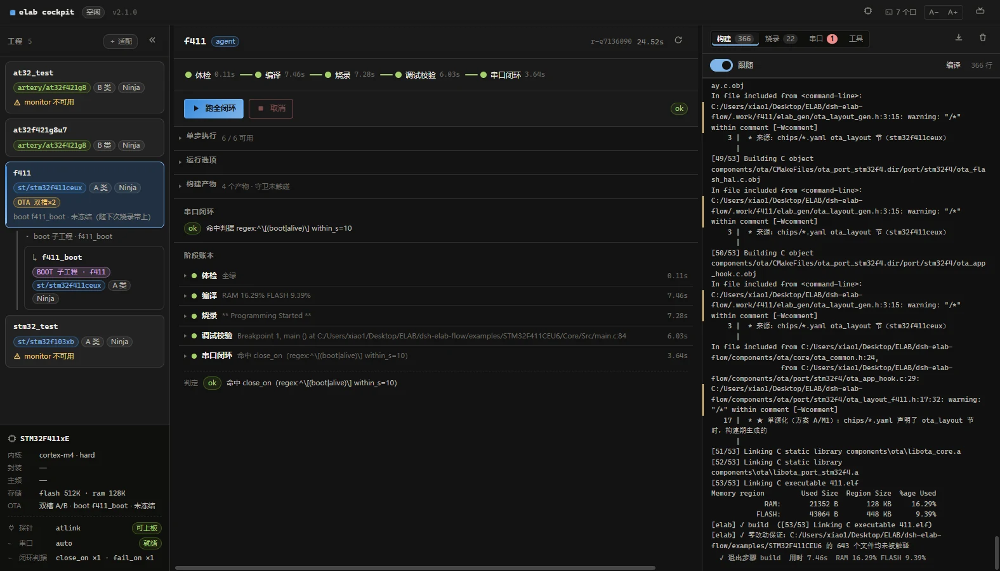

01 / 闭环编排
一条命令跑完五个阶段，
每一步都留下可 grep 的证据
体检 → 编译 → 烧录 → 调试校验 → 串口闭环。串口判据给出三态结论，能开但没收到约定关键字就报 inconclusive —— 不会把「没验证」冒充成成功。
- 单步可跑：
elab run --steps build，不必每次全量 - 退出码即结论：
0ok /1failed /2inconclusive，CI 直接用 - 构建产物、内存占位、守卫快照同屏落账

STM32F411CEU6 · 真机// A-07 · 五阶段全绿，产物 4 个 / 守卫 untouched